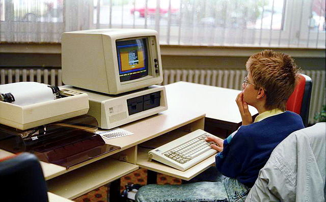
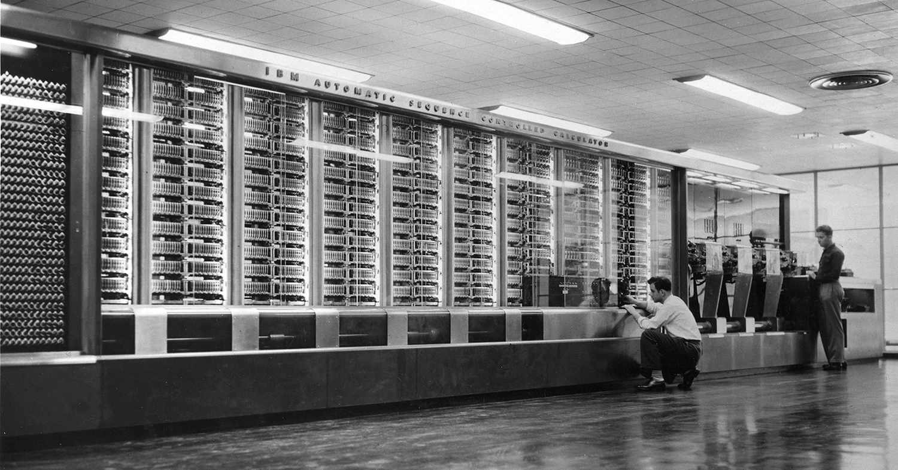
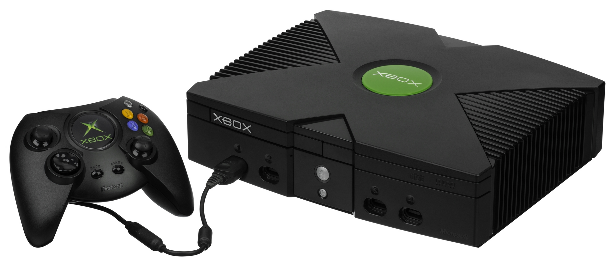
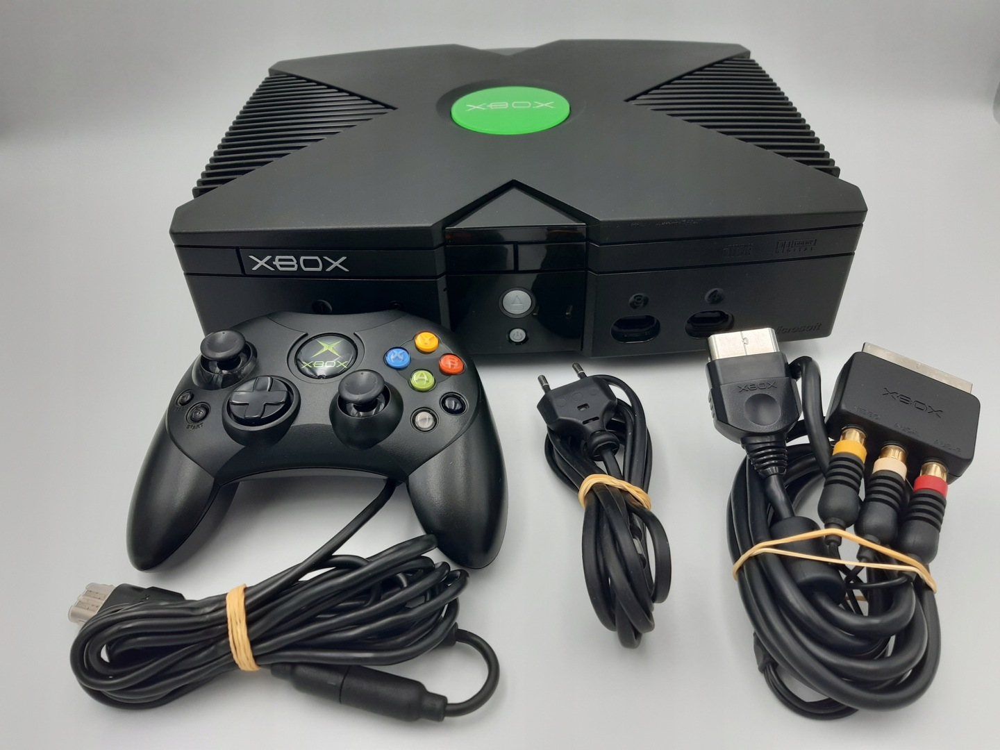
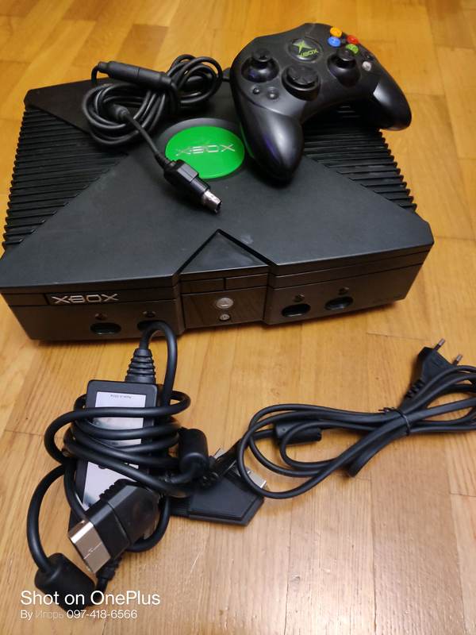
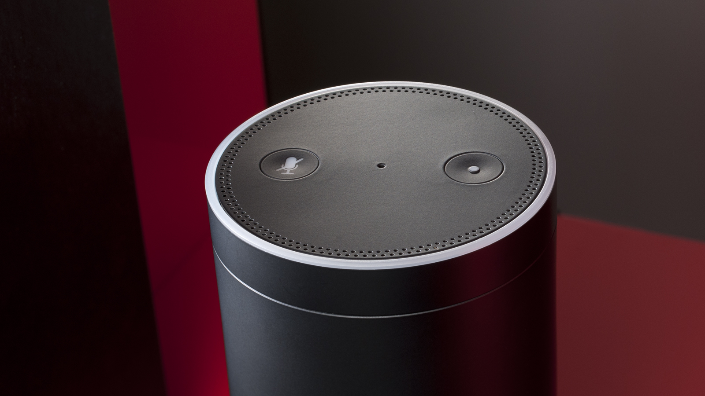
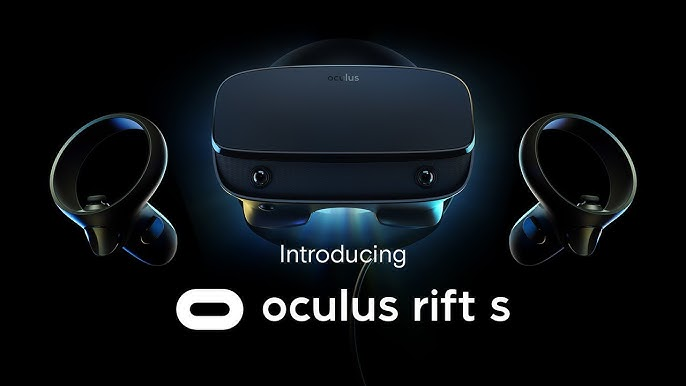
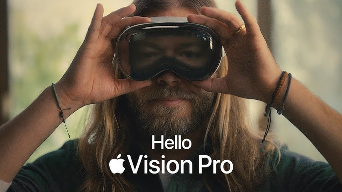

Історія найвідоміших гаджетів, що змінили світ
Від минулого до сьогодення

Harvard Mark I
Цей велетенський електромеханічний комп’ютер, довжиною понад 15 метрів, став першим кроком до автоматизації складних обчислень. Harvard Mark I використовувався для військових розрахунків під час Другої світової війни. Хоча його швидкість роботи була в мільйони разів меншою, ніж сучасних комп’ютерів, він проклав шлях до розвитку цифрових обчислювальних машин.

IBM PC
Поява IBM PC змінила уявлення про комп’ютери як про дорогі та спеціалізовані пристрої. Завдяки універсальній архітектурі, цей комп’ютер став доступним як для офісів, так і для домашнього використання. IBM PC також стимулював розробку операційних систем, програмного забезпечення і навіть комп’ютерних ігор.
Macintosh
Apple зробила величезний прорив, коли представила Macintosh – перший комп’ютер із графічним інтерфейсом і мишкою. Його реклама на Супербоулі стала культовою, а сам пристрій заклав основу сучасного підходу до дизайну та зручності техніки.
Sony Walkman
До появи Walkman прослуховування музики було обмежене стаціонарними системами. Цей невеликий касетний плеєр зробив музику мобільною. Він дозволив людям слухати улюблені треки під час прогулянки, тренувань чи подорожей. Walkman став культовим символом 80-х, а фраза "переносна музика" отримала нове значення.
Apple iPod
У світі, де панували компакт-диски, iPod запропонував щось нове – можливість зберігати до тисячі пісень у кишені. Зручний інтерфейс, компактний дизайн і інтеграція з iTunes зробили цей пристрій справжнім хітом. Він став попередником сучасних потокових платформ і перевизначив, як ми споживаємо медіа.
Motorola DynaTAC 8000X
Перша мобілка, яка важила майже як цеглина, коштувала 3995 доларів і мала акумулятор, який працював лише 30 хвилин. Хоча це здається примітивним, DynaTAC відкрив шлях для мобільного зв’язку, зробивши мрію про спілкування "на ходу" реальністю. Він став символом престижу в 80-х.
Microsoft Xbox
Xbox став першою консоллю, яка серйозно змагалася із Sony PlayStation. Її потужний процесор та сервіс Xbox Live заклали основу для сучасного багатокористувацького онлайн-геймінгу, який сьогодні став невід'ємною частиною культури ігор.



PalmPilot
До появи смартфонів, PalmPilot був першим справді популярним кишеньковим комп’ютером. Він пропонував функції, як-от адресна книга, календар і електронна пошта, що зробило його ідеальним помічником для бізнесменів.
Motorola RAZR V3
Цей телефон став культовим не лише завдяки своїм характеристикам, а й через стильний дизайн. Його тонкий корпус і металеве оздоблення зробили його "must-have" гаджетом для мільйонів користувачів по всьому світу.
Apple iPad
Планшет, який зруйнував бар’єр між ноутбуками та смартфонами. Зручний для навчання, перегляду відео та читання, iPad став універсальним інструментом для всіх поколінь.
Amazon Echo
Поява Amazon Echo із вбудованим голосовим асистентом Alexa відкрила нову еру "розумних" пристроїв. Ця колонка дозволяє керувати музикою, запитувати погоду, налаштовувати нагадування та контролювати інші пристрої вдома за допомогою голосу.

VR Oculus Rift
Віртуальна реальність перестала бути фантастикою. Oculus Rift дозволив гравцям повністю зануритися у віртуальний світ. Цей пристрій також використовується в освіті, медицині та архітектурі.

Apple Vision Pro
Поєднуючи доповнену та віртуальну реальність, Vision Pro відкриває нові горизонти у використанні технологій для роботи, навчання та розваг.


Висновок
Кожен з цих гаджетів був не просто винаходом, а символом свого часу. Вони змінили спосіб, у який ми спілкуємося, працюємо і розважаємося. Їхня історія нагадує нам, що майбутнє технологій залежить від наших сміливих ідей сьогодні.